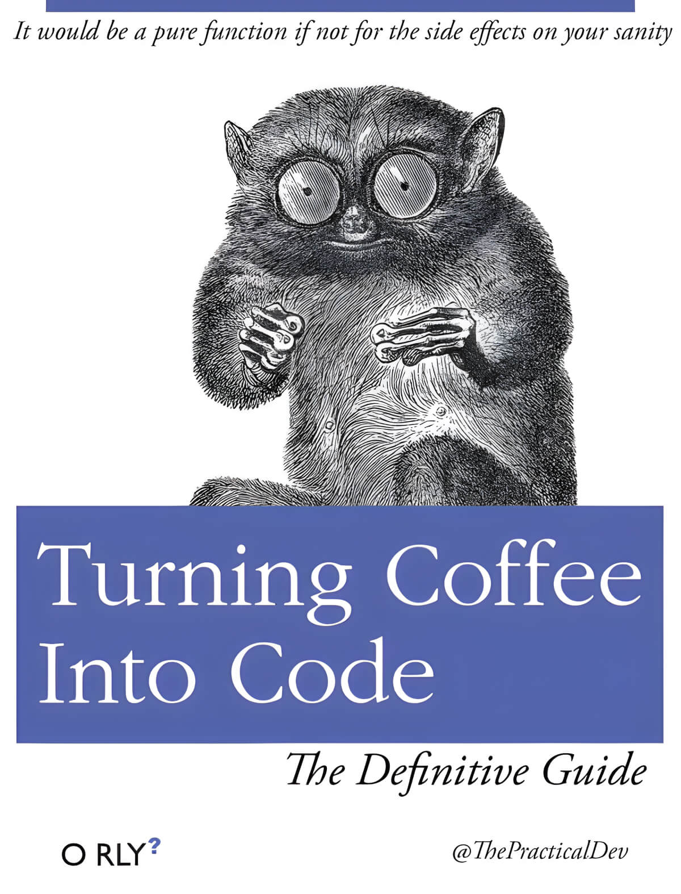
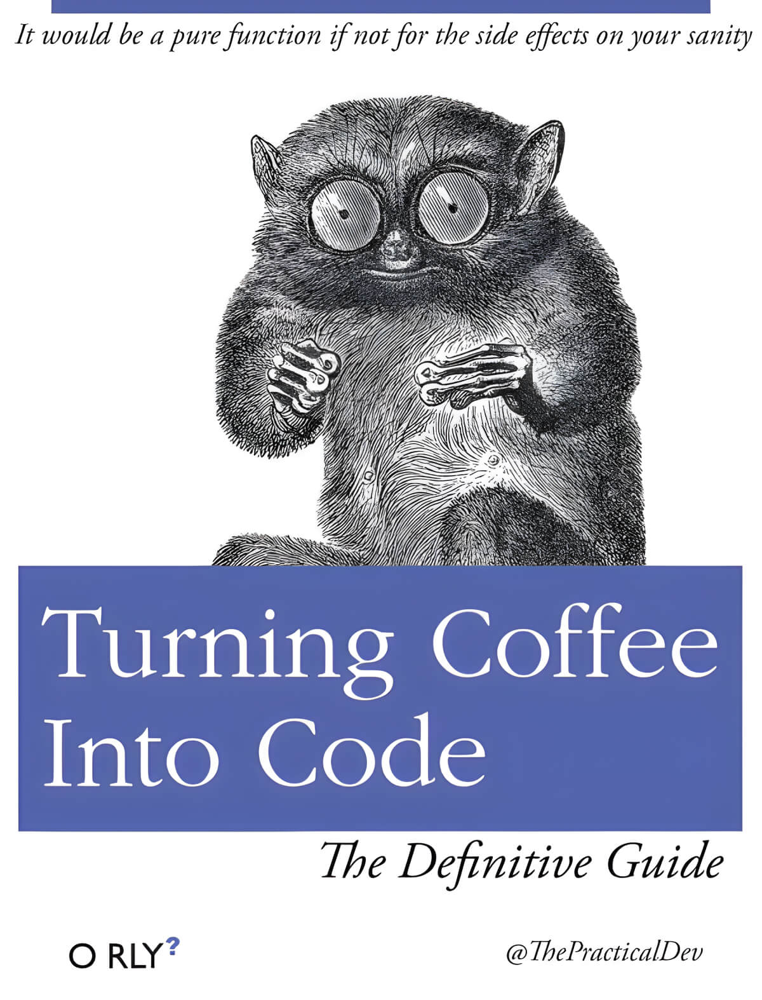

Браузерный движок (layout engine) — специализированная программа,
обрабатывающая и преобразующая содержимое
страниц в интерактивное изображение на экране
Кроме того, массивы двойных значений работают быстрее - скрытый класс массива отслеживает типы элементов, а массивы, содержащие только двойные значения, распаковываются (что вызывает скрытое изменение класса). Однако небрежное манипулирование массивами может вызвать дополнительную работу из-за упаковки и распаковки - например
var a = new Array();
a[0] = 77; // Allocates
a[1] = 88;
a[2] = 0.5; // Allocates, converts
a[3] = true; // Allocates, converts```
менее эффективен, чем:
var a = [77, 88, 0.5, true];
Код
class Point {
constructor(x,y) {
this.x = x
this.y = y
}
}
const p1 = new Point(11, 22) // hidden classId created
const p2 = new Point(33, 44);
Код
for (var b = 0; b < 10; b++) {
a[0] |= b; // Oh no!
}
//vs.
a = new Array();
a[0] = 0;
for (var b = 0; b < 10; b++) {
a[0] |= b; // Much better! 2x faster.
}
for (let i = 0; i < 1000; ++i) {
// fast 🚀
}
for (let i = 0.1; i < 1000.1; ++i) {
// slow 🐌
}
'\link rel="prefetch" href="/style.css" as="style" />'
'\link rel="preload" href="/style.css" as="style" />'
'\link rel="preconnect" href="https://example.com" />'
'\link rel="dns-prefetch" href="https://example.com" />'
'\link rel="prerender" href="https://example.com/about.html" />'
'\link rel="modulepreload" href="/script.js" />'
'preload– когда вам понадобится ресурс через несколько секунд'
'prefetch– когда вам нужен ресурс для следующей страницы'
'preconnect– когда вы знаете, что вам скоро понадобится ресурс, но вы пока не знаете его полный URL'
'dns-prefetch– когда вы знаете, что вам скоро понадобится ресурс, но вы еще не знаете его полный URL (для старых браузеров)'
'prerender– когда вы уверены, что большинство пользователей перейдут на определенную страницу, и вы хотите ускорить этот процесс'
'modulepreload– когда вам скоро понадобится скрипт модуля ES'
https://v8.dev/blog/react-cliff
https://www.npmjs.com/package/autocannon
32-битное представление дополнения до двух полезно не только для операций с массивами.
В целом, процессоры выполняют целочисленные операции намного быстрее, чем операции с плавающей точкой
. Вот почему в следующем примере первый цикл легко в два раза быстрее по сравнению со вторым
циклом.
Если оба операнда представлены как целые числа, процессор может вычислить результат очень эффективно.
V8 имеет дополнительные быстрые пути для случаев, когда divisor является степенью двойки. Для значений,
представленных как числа с плавающей точкой, вычисления намного сложнее и занимают гораздо больше
времени
Почему у некоторых движков больше уровней оптимизации, чем у других?
Оказывается, существует компромисс между быстрым запуском кода или затратой большего времени, но в конечном итоге запуском кода с оптимальной производительностью
Интерпретатор может быстро производить байт-код, но байт-код, как правило, не очень эффективен. Оптимизирующий компилятор, с другой стороны, работает немного дольше, но в конечном итоге производит гораздо более эффективный машинный код.
Именно эту модель использует V8. Интерпретатор V8 называется Ignition, и это самый быстрый интерпретатор среди всех движков (с точки зрения скорости выполнения сырого байт-кода). Оптимизирующий компилятор V8 называется TurboFan, и в конечном итоге он генерирует высоко оптимизированный машинный код.
тот компромисс между задержкой запуска и скоростью выполнения является причиной того, что некоторые движки JS предпочитают добавлять промежуточные уровни оптимизации. Например, SpiderMonkey добавляет базовый уровень между интерпретатором и своим полным оптимизирующим компилятором IonMonkey:
Интерпретатор генерирует байт-код быстро, но байт-код выполняется относительно медленно. Baseline тратит немного больше времени на генерацию кода, но обеспечивает лучшую производительность во время выполнения. И, наконец, оптимизирующий компилятор IonMonkey тратит больше всего времени на создание машинного кода, но этот код может работать очень эффективно.
Давайте рассмотрим конкретный пример и посмотрим, как конвейеры в разных движках справляются с этим. Вот код, который часто повторяется в горячем цикле.
let result = 0;
for (let i = 0; i < 4242424242; ++i) {
result += i;
}
console.log(result);
V8 начинает выполнять байт-код в интерпретаторе Ignition. В какой-то момент движок определяет, что код горячий , и запускает фронтенд TurboFan, который является частью TurboFan, занимающейся интеграцией данных профилирования и построением базового машинного представления кода. Затем это отправляется в оптимизатор TurboFan в другом потоке для дальнейших улучшений.
Пока оптимизатор работает, V8 продолжает выполнять байт-код в Ignition. В какой-то момент оптимизатор завершает работу, и у нас есть исполняемый машинный код, и выполнение может продолжаться с ним.
Обновление: Начиная с версии Chrome 91 (выпущенной в 2021 году), в V8 появился дополнительный компилятор под названием Sparkplug между интерпретатором Ignition и оптимизирующим компилятором TurboFan
Движок SpiderMonkey также начинает выполнять байт-код в интерпретаторе. Но у него есть дополнительный уровень Baseline, который означает, что горячий код сначала отправляется в Baseline. Компилятор Baseline генерирует код Baseline в главном потоке и продолжает выполнение, как только он готов.
Если код Baseline выполняется некоторое время, SpiderMonkey в конечном итоге запускает фронтенд IonMonkey и запускает оптимизатор — очень похоже на V8. Он продолжает работать в Baseline, пока IonMonkey оптимизирует. Наконец, когда оптимизатор завершает работу, оптимизированный код выполняется вместо кода Baseline.
// Создание метки
performance.mark('task-start');
// Выполнение функции
doTask();
// Завершение метки
performance.mark('task-end');
// Создание измерения
performance.measure('task', 'task-start', 'task-end');
// Получение результатов
const [firstItem, ...rest] = performance.getEntriesByName('task');
console.log(firstItem.duration);
const markerStart = "marker-start";
const markerEnd = "marker-end";
// Run some nested timeouts, and create a PerformanceMark for each.
performance.mark(markerNameA);
setTimeout(function() {
performance.mark(markerNameB);
setTimeout(function() {
// Create a variety of measurements.
performance.measure("measure a to b", markerNameA, markerNameB);
performance.measure("measure a to now", markerNameA);
performance.measure("measure from navigation start to b", undefined, markerNameB);
performance.measure("measure from the start of navigation to now");
// Pull out all of the measurements.
console.log(performance.getEntriesByType("measure"));
// Finally, clean up the entries.
performance.Marks();
performance.Measures();
}, 1000);
}, 1000);
console.time("answer time");
alert("Click to continue");
console.timeLog("answer time");
alert("Do a bunch of other stuff...");
console.timeEnd("answer time");
Код
import { performance } from "node:perf_hooks";
console.log(performance.now());
--prof
--cpu-prof
https://nodejs.org/api/inspector.html
function add(a, b) {
return {
name: a.name + b.name,
type: a.type + b.type
}
}
Код
function add(x,y) {
return x + y
}
add(1,2) // monomorphic
add('a', 'b') // polymorphic
add(true, false)
add({},{})
add([],[]) // megamorphic - at this stage, 4+ tries, no optimization will happen
function add(a, b) {
return a.a + a.b + a.c + a.d +
b.a + b.b + b.c + b.d;
}
let result = 0;
for (let i = 0; i < 1000000; i++) {
result += add(data1, data2);
result += add(data3, data4);
}
Результат выполнения
[...] {...}
Избегайте методов массивов/объектов
Компитенция
Test
const result =
[1.5, 3.5, 5.0]
.map(n => Math.round(n))
.filter(n => n % 2 === 0)
.reduce((a, n) => a + n, 0)
Код
// Вводные
const numbers = Array.from({ length: 10_000 }).map(() => Math.random());
// 1. Декларативный подход
const result =
numbers.map(n => Math.round(n * 10))
.filter(n => n % 2 === 0)
.reduce((a, n) => a + n, 0);
// 2. Императивный подход
let result = 0;
for (let i = 0; i < numbers.length; i++) {
let n = Math.round(numbers[i] * 10);
if (n % 2 !== 0) continue;
result = result + n;
}
const large = Array.from({ length: 10_000 }).map(() => 'string').join('');
const small = large.slice(0, 50);
Код
// replace a token that doesn't exist
const small = small.replace('#'.repeat(small.length + 1), '')
Результат выполнения
Используйте eval
Код
// С eval
const key = "requestId";
const values = Array.from({ length: 100_000 }).fill(42);
function createMessages(key, values) {
const messages = []
for (let i = 0; i < values.length; i++) {
messages.push({ [key]: values[i] })
}
return messages
}
createMessages(key, values);
Код
// Без eval
const key = "requestId";
const values = Array.from({ length: 100_000 }).fill(42)
function createMessages(key, values) {
const messages = [];
const createMessage = new Function('value',
`return { ${JSON.stringify(key)}: value }`
)
for (let i = 0; i < values.length; i++) {
messages.push(createMessage(values[i]))
}
return messages
}
createMessages(key, values)
Результат выполнения
Косвенность
Код
const point = new Proxy({ x: 10, y: 20 }, { get: (t, k) => t[k] });
for (let _ = 0, i = 0; i < 100_000; i++) {
_ += point.x;
};
Код
const point = {
x: 10,
y: 20
};
const x = point.x;
for (let _ = 0, i = 0; i < 100_000; i++) {
_ += x;
};
Результат выполнения
Test
const a = { state: { center: { point: { x: 10, y: 20 } } } }
const b = { state: { center: { point: { x: 10, y: 20 } } } }
const get = (i) => i % 2 ? a : b;
let result = 0;
for (let i = 0; i < 100_000; i++) {
result = result + get(i).state.center.point.x }
Код
// 2. direct access
const a = { x: 10, y: 20 }.x
const b = { x: 10, y: 20 }.x
const get = (i) => i % 2 ? a : b
let result = 0
for (let i = 0; i < 100_000; i++) {
result = result + get(i) }
Результат выполнения
Специализация
Код
// 1. not specialized
for (let i = 0; i < 100; i++) {
productsToString(descriptions, someTags)
productsToString(descriptions, noTags)
productsToString(descriptions, noTags)
productsToString(descriptions, noTags)
productsToString(descriptions, noTags)
}
Код
// 2. specialized
for (let i = 0; i < 100; i++) {
productsToStringSpecialized(descriptions, someTags);
productsToStringSpecialized(descriptions, noTags);
productsToStringSpecialized(descriptions, noTags);
productsToStringSpecialized(descriptions, noTags);
productsToStringSpecialized(descriptions, noTags);
}
Код
const descriptions = ['apples', 'oranges', 'bananas', 'seven']
const someTags = {
apples: '::promotion::',
}
const noTags = {}
function productsToString(description, tags) {
let result = '';
description.forEach(product => {
result += product
if (tags[product]) result += tags[product]
result += ', '
});
return result;
}
Код
function productsToStringSpecialized(description, tags) {
// Мы знаем, что `tags`, скорее всего, будет пустым, поэтому мы проверяем
// один раз заранее, а затем можем удалить проверку `if`
// из внутреннего цикла
if (isEmpty(tags)) {
let result = '';
description.forEach(product => {
result += product + ', ';
});
return result;
} else {
let result = '';
description.forEach(product => {
result += product
if (tags[product]) result += tags[product]
result += ', '
});
return result;
}
}
function isEmpty(o) {
for (let _ in o) {
return false;
}
return true;
}
Результат выполнения
Структуры данных
Код
// Вводные
const userIds = Array.from({ length: 1_000 }).map((_, i) => i)
const adminIdsArray = userIds.slice(0, 10)
const adminIdsSet = new Set(adminIdsArray)
// Array
let _ = 0;
for (let i = 0; i < userIds.length; i++) {
if (adminIdsArray.includes(userIds[i])) { _ += 1 }
}
// Set
let _ = 0;
for (let i = 0; i < userIds.length; i++) {
if (adminIdsSet.has(userIds[i])) { _ += 1 }
}
// Вводные
const K = 1024;
const length = 1 * K * K;
// Последовательно в памяти
const points = new Array(length);
for (let i = 0; i < points.length; i++) {
points[i] = {
x: 42,
y: 0
}
}
// Хаотично в памяти
const shuffledPoints = shuffle(points.slice());
Код
// from this
const points = [{ x: 0, y: 5 }, { x: 0, y: 10 }]
// to this
const points = new Int64Array([0, 5, 0, 10])
Код
// Последовательно
let _ = 0;
for (let i = 0; i < points.length; i++) {
_ += points[i].x;
}
// Рандом
let _ = 0;
for (let i = 0; i < shuffledPoints.length; i++) {
_ += shuffledPoints[i].x;
}
Результат выполнения
Что там в бандле?
Test
Памятка
выбрать метрики, которыми можно можно охарактериозовать «степень оптимальности» нашего сайта или
приложения
найти код сильене всего ухудшающий метрики
внести изменния в код
измерить новые значения
повторить
Если оптимизировать невозможно
использовать обратную связь (спиннеры, заблокированные кнопки)
использовать особенности восприятия (приветственный экран Apple — муляж, фотография последнего
экрана)
interface SomeType<T> {
foo<U>(x: U):
U extends TypeA<T> ? ProcessTypeA<U, T> :
U extends TypeB<T> ? ProcessTypeB<U, T> :
U extends TypeC<T> ? ProcessTypeC<U, T> :
U;
type FooResult<U, T> =
U extends TypeA<T> ? ProcessTypeA<U, T> :
U extends TypeB<T> ? ProcessTypeB<U, T> :
U extends TypeC<T> ? ProcessTypeC<U, T> :
U;
interface SomeType<T> {
foo<U>(x: U): FooResult<U, T>;
}
}
Код
// Норм
type Foo = Bar & Baz & {
someProp: string;
}
// Лучше
interface Foo extends Bar, Baz {
someProp: string;
}
Использование аннотирования
// Норм
import { otherFunc } from "other";
export function func() {
return otherFunc();
}
// Лучше
import { otherFunc, OtherType } from "other";
export function func(): OtherType {
return otherFunc();
}
Контроль за типами
// src/tsconfig.json
{
"compilerOptions": {
// Don't automatically include anything.
// Only include `@types` packages that we need to import.
"types" : []
},
"files": ["foo.ts"]
}
// tests/tsconfig.json
{
"compilerOptions": {
// Only include `@types/node` and `@types/mocha`.
"types" : ["node", "mocha"]
},
"files": ["foo.test.ts"]
}
module.exports = function(N, staff, K) {
staff.sort((a, b) => b - a);
let sum = 0;
for (let = 0; i < Math.min(K, N); i++) {
sum += staff[i];
}
return sum;
}
Код
module.exports = function(N, staff, K) {
let count = new Array(26).fill(0);
let maxGrade = 0;
let keyboardsUsed = 0;
ley grade = 25;
for (let i = 0; i < N; i++) {
count[staff[i]]++;
}
while (keyboardUsed < K) {
if (count[grade] > 0) {
maxGrade += grade;
count[grade]--;
keyboardUsed++;
} else {
grade--;
}
}
return maxGrade;
}
Код
…it is a garbage garbage-collected language. It has performance uncertainty.
Performance unpredictability is one way to put it, where you may be giving
something at 60 frames a second for a game and suddenly, you run out of real-
^me because of a garbage collec^on that has to happen to reclaim memory
Брендан Айк, создатель JS в одном из недавних подкастов

 UX Core
UX Core


 codeium
codeium
 Addy Osmani
Addy Osmani


 https://mathiasbynens.be/notes/prototypes
https://mathiasbynens.be/notes/prototypes


 At property performance
At property performance


 memlab
memlab


 httparchive
httparchive


 patch-package
patch-package


 
